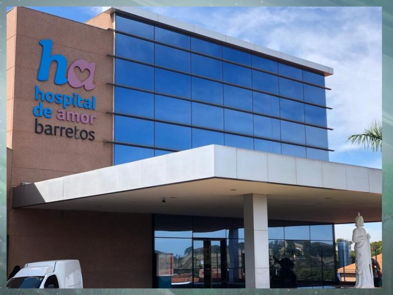

Na década de 1960, o único centro especializado para tratamento de câncer situava-se na capital do estado de São Paulo e os pacientes que apareciam no Hospital São Judas de Barretos com a doença, eram, em sua maioria, previdenciários de baixa renda, com alto índice de analfabetismo. Por isso, tinham dificuldades de buscar tratamento na capital, por falta de recursos, receio das grandes cidades, além da imprevisibilidade de vaga para internação.
Em 27 de novembro de 1967, foi instituída a Fundação Pio XII e, conforme memorando 234, de 21 de maio de 1968, assinado pelo Dr. Décio Pacheco Pedroso, diretor do INPS, passou a atender pacientes portadores de câncer.
Este pequeno Hospital contava com apenas quatro médicos: Dr. Paulo Prata, Dra. Scylla Duarte Prata, Dr. Miguel Gonçalves e Dr. Domingos Boldrini. Eles trabalhavam em tempo integral, dedicação exclusiva, caixa único e tratamento personalizado. Filosofia de trabalho que promoveu o crescimento da Instituição.
Devido à grande demanda de pacientes e ao velho e pequeno hospital não comportar todo crescimento, o Dr. Paulo Prata, idealizador e fundador, recebeu a doação de uma área na periferia da cidade e propôs a construção de um novo Hospital que pudesse responder às crescentes necessidades.
No ano de 1989, Henrique Prata, filho do casal de médicos fundadores do hospital, abraça a ideia do pai e com a ajuda de fazendeiros da cidade e da região realiza mais uma parte do projeto. O pavilhão Antenor Duarte Villela, onde, hoje, funciona uma parte dos dos ambulatórios do novo hospital, é inaugurado em 6 de dezembro de 1991.
Dando sequência ao projeto, que vem ganhando grandes proporções com a ajuda da comunidade, de artistas, da iniciativa privada e com a participação financeira governamental, outras áreas do hospital estão sendo construídas para atender, gratuitamente, os pacientes com câncer que chegam até nós.